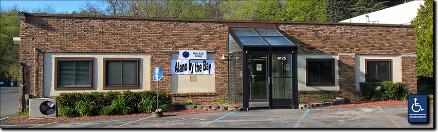

(C) Copyright 2016 Alano By The Bay, Inc.
All rights reserved.

Why was "Alano by the Bay" Formed?
by Bob Eichelaub, Co-founder
Board President 2015-present
Alano by the Bay was formed in the fall of 2015 so that we could sign the lease on the Cedar Run meeting space, something that AA is unable to do.
Tradition 6: “An A.A. group ought never endorse, finance, or lend the A.A. name to any related facility or outside enterprise, lest problems of money, property, and prestige divert us from our primary purpose.”
Alano by the Bay’s purpose is to help facilitate recovery in the Grand Traverse Area. Our long- term goal is to be able to purchase a building. The membership will help us promote recovery and work towards the goal of having a permanent space for A.A. meetings.
The yearly membership fee is $100. We realize that not everyone can afford this amount. You will never be excluded from any meeting or from any Alano event held at the club because you are not a member. Members will be able to serve on the Alano board and vote at our yearly meeting (and feel good about supporting our future in the Grand Traverse Area).
Alano By The Bay is a Michigan 501(c)(3) Nonprofit Corporation (est. December 2015) so certain types of monetary, in-kind, and other contributions may be tax-deductible; consult a qualified tax advisor for more information.

(C) Copyright 2016 Alano By The Bay, Inc.
All rights reserved.
LAST UPDATED 2 JUNE 2017 EP